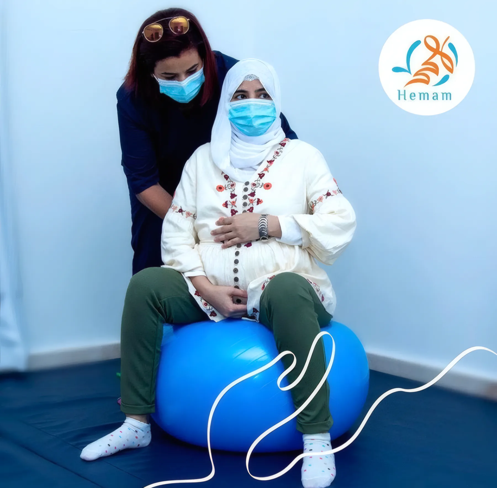

Ourservices
Services at our centre in Seeb include everything from a first physiotherapy assessment to the pool, pregnancy care, babies, home visits, dry needling and speech therapy. Tap a service for the detail and the treatments on our list.
01PhysiotherapyMovement, pain and recovery after injury or illness
Physiotherapy consists of rehabilitative programmes that improve or restore human motor functions, maximise movement ability, relieve pain syndromes, and treat or prevent physical challenges associated with injuries, diseases and other impairments.
- HEM50 Initial physical therapy evaluation
- HEM19 Manual therapy techniques, each 15 minutes
- HEM14 Therapeutic exercise, each 15 minutes
- HEM53 Neuromuscular re-education

02HydrotherapyExercise and swimming in our therapy pool
Hydrotherapy is a way of treating some diseases and injuries through swimming and exercises in water. One of the benefits of therapy inside the pool is that the body weight is reduced by up to 90%.
- HEM16 Water pool therapy with therapeutic exercises, each 15 minutes

03Woman CarePhysiotherapy through pregnancy
Pregnancy is an exciting time for women and families, but it can also be scary. During pregnancy your body goes through many changes, and we are here for you every step of the way, for you and your new baby.

04Baby SpaWater time for babies
Did you know that babies are born natural swimmers? Nine months in the womb make them adapt naturally to water, which can help growth and development.
Splashing, kicking and having fun in the water stimulates the nerves that matter for your baby's wellbeing, boosts their confidence and improves the musculo-skeletal system.
05Home VisitPhysiotherapy at your home
We bring our physiotherapy services into your home to help with the challenges our older and less mobile patients face. Our physiotherapists help you or your loved one stay independent and get the most out of life.
- HEM24 Self-care or home management training, each 15 minutes
- HEM26 Wheelchair management, each 15 minutes

06Dry NeedlingNeedle insertion without injection
Fine needles placed in the muscle, with no injection. Priced on our list by the number of muscles treated.
- HEM02 Needle insertion(s) without injection(s), 1 or 2 muscles
- HEM03 Needle insertion(s) without injection(s), 3 or more muscles
07Speech TherapySpeech, voice, language and swallowing, at the centre or at home
Assessment and treatment of speech, language, voice and swallowing. We also offer speech therapy as a home visit.
- HEM33 Evaluation of speech sound production
- HEM38 Evaluation of speech fluency
- HEM44 Treatment of speech, language, voice, communication and/or auditory processing disorder
- HEM46 Evaluation of oral and pharyngeal swallowing function
- HEM47 Treatment of swallowing dysfunction and/or oral function for feeding
Treatment list
Treatments on our list, with their Hemam codes.
Assessment
- HEM50Initial physical therapy evaluation
- HEM51Physical therapy re-evaluation
- HEM21Re-evaluation of physical therapy, typically 20 minutes
- HEM27Physical performance test or measurement with report, each 15 minutes
- HEM62Physical performance test
Hands-on therapy and exercise
- HEM19Manual (physical) therapy techniques to one or more regions, each 15 minutes
- HEM54Manual therapy
- HEM14Therapeutic exercise to develop strength, endurance, range of motion and flexibility, each 15 minutes
- HEM52Therapeutic exercise
- HEM15Therapeutic procedure to re-educate brain-to-nerve-to-muscle function, each 15 minutes
- HEM53Neuromuscular re-education
- HEM22Therapeutic activities to improve function, one-on-one, each 15 minutes
- HEM20Therapeutic procedures in a group setting
- HEM32Physical or manipulative therapy for maintenance
- HEM57Therapeutic massage
Electrotherapy, heat and traction
- HEM04Electrical stimulation to one or more areas, unattended by therapist
- HEM07Electrical stimulation to one or more areas, for other than wound care
- HEM12Electrical stimulation to one or more areas
- HEM59Electrical stimulation
- HEM13Ultrasound to one or more areas, each 15 minutes
- HEM58Ultrasound therapy
- HEM05Hot or cold packs to one or more areas
- HEM60Hot and cold therapy (hot/cold packs)
- HEM10Hot wax bath to one or more areas
- HEM11Low energy heat (infrared) to one or more areas
- HEM06Mechanical traction to one or more areas
- HEM61Mechanical traction
- HEM01Blood vessel compression or decompression device to one or more areas
Water
- HEM16Water pool therapy with therapeutic exercises to one or more areas, each 15 minutes
Dry needling
- HEM02Needle insertion(s) without injection(s), 1 or 2 muscles
- HEM03Needle insertion(s) without injection(s), 3 or more muscles
Chest physiotherapy
- HEM08Demonstration and/or evaluation of manual manoeuvres to the chest wall to help move lung secretions
- HEM09Manual manoeuvres to the chest wall to help move lung secretions
Daily life and rehabilitation
- HEM23Sensory technique to enhance processing and adaptation, each 15 minutes
- HEM24Self-care or home management training, each 15 minutes
- HEM56Self-care / home management training
- HEM25Community or work reintegration training, each 15 minutes
- HEM26Wheelchair management, each 15 minutes
- HEM28Training in the use of orthotics (supports, braces or splints), per 15 minutes
- HEM30Management and/or training in the use of orthotics, per 15 minutes
- HEM29Training in the use of a prosthesis for arms and/or legs, per 15 minutes
Speech, swallowing and cognition
- HEM33Evaluation of speech sound production
- HEM37Evaluation of language comprehension and expression
- HEM38Evaluation of speech fluency
- HEM34Behavioural and qualitative analysis of voice and resonance
- HEM40Assessment of aphasia
- HEM44Treatment of speech, language, voice, communication and/or auditory processing disorder
- HEM46Evaluation of oral and pharyngeal swallowing function
- HEM47Treatment of swallowing dysfunction and/or oral function for feeding
- HEM43Evaluation of auditory function for surgically implanted device candidacy or post-operative status
- HEM48Evaluation for a speech-generating communication device
- HEM49Therapy for the use of a speech-generating device, including programming
- HEM35One-on-one cognitive therapy
- HEM45Therapeutic interventions that focus on cognitive function
- HEM39Standardised cognitive performance testing
- HEM41Developmental test administration